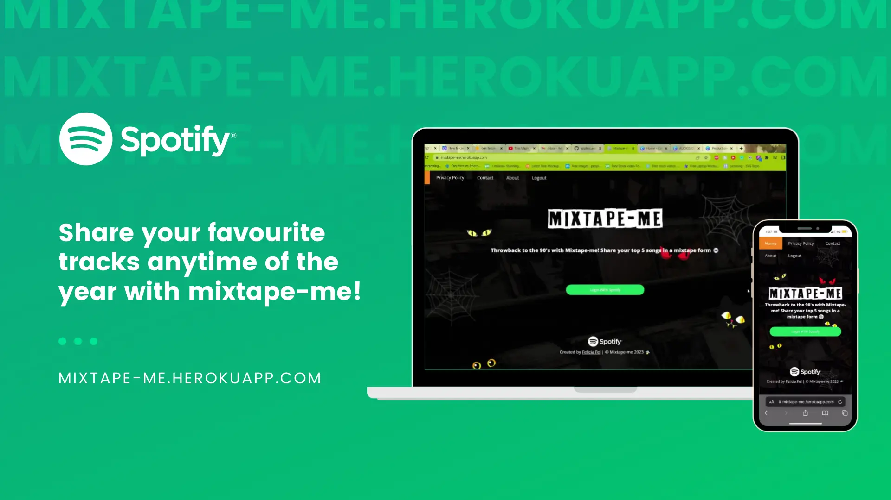
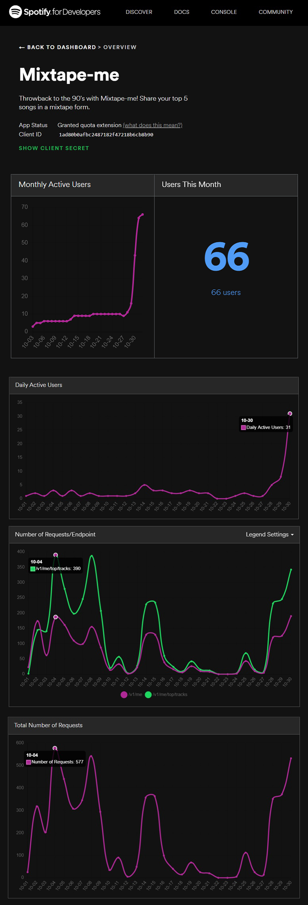

Mixtape-me | Spotify app integration.
Throwback to the 90's with Mixtape-me! Share your top 5 songs in a mixtape form.
In today’s modern era, music is readily available online, you can play whatever you want whenever you
want it. But it wasn’t the case back then in the 90’s before platforms like Spotify is invented, music
enthusiast must go to a record store or a CD store, go through each aisle to find they favourite songs
and artist. There’s a sense of nostalgia with going to a store and flicking through rows of CD’s
nostalgia and driven by post pandemic angst, retro entertainment options are coming back to trend.
Mixtape-me aims to recreate that experience of walking through the doors of a record store looking at CD
covers and store walls with colourful albums, memorabilia, and photos, transferring the same experience
in a digital form and sharing your mixtape with your friends! Using Spotify’s technology, it has never
been easier to find out who you listen to the most all year round, last 6 months or even this year.
Expertise
Full Stack Web Developer
Year
2022



Techonogies:


Requirements
For Mixtape-me to work, it will require the user to log in and allow the app to use their top track’s data. Mixtape-me is an open-source app that is developed individually. By choosing to use this app, user agrees to the use of their Spotify account username and data for their top 5 tracks. No data is used by the app is stored or collected in any way or form. Mixtape-me works by only by simply displaying your top 5 tracks from Spotify.
Built with
• Bootstrap • CSS • Figma • GitHub • Heroku • HTML • JavaScript • Spotify Web API • Visual Studio Code
Links
Visit https://mixtape-me.herokuapp.com to access the web application.
User Guide
-
Log in to your spotify account
-
Access your top 5 mixtapes
-
Choose from "Last month", "Last 6 months", and "This year" top tracks
-
Download mixtapes images
How it works?
Mixtape-me is an open-source app that sorts your top 5 tracks and make it into a mixtape. All you need to do
is login to Spotify and mixtape-me will sort your top tracks according to your listening history on your
Spotify account. Share your mixtapes by saving the image!
How are the top tracks determined?
Mixtape-me uses your listening history from your Spotify account. All the data is provided by Spotify.
How to save my mixtape?
Click the download button on top of the mixtapes, wait for a little bit and the file should be
downloaded to your device. Sometimes it takes multiple downloads for the image to load properly, so if your
first image download doesn't turn out right, please redownload the image, or simply take a screenshot
📱
The app isn't working.
If the app doesn't work, try clearing your cookies and site data for
mixtape-me.herokuapp.com, or try a different device.
Spotify Developer Dashboard
Spotify have a very comprehensive documentation on web API. First thing I do is to register my app to the
Spotify developer's account with the Spotify Web API Console lets you explore the endpoints through an
easy-to-use interface.
Based on simple REST principles, the Spotify Web API endpoints return JSON metadata about music artists, albums, and tracks, directly from the Spotify Data Catalogue.

The first day of Mixtape-me launching, there's a large surge in user signing in and using the app, and I
will keep on promoting Mixtape-me to the public. The target is to have 100 user on this project!
Involving users early in projects helps you understand real-world use cases, such as how people
understanding on how to use the app and emerging technologies.
It broadens your perspective and can lead you to discover new ways of designing your product that makes
it works better.